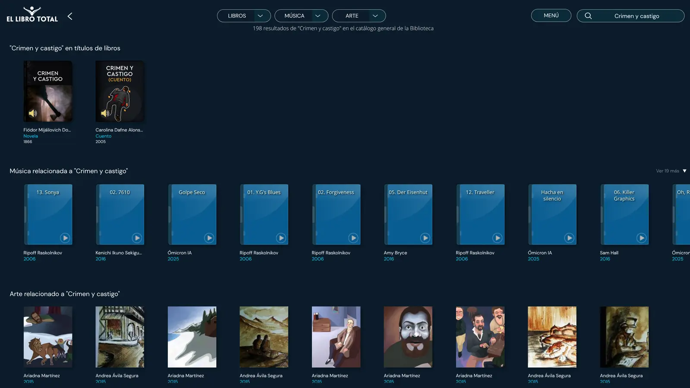
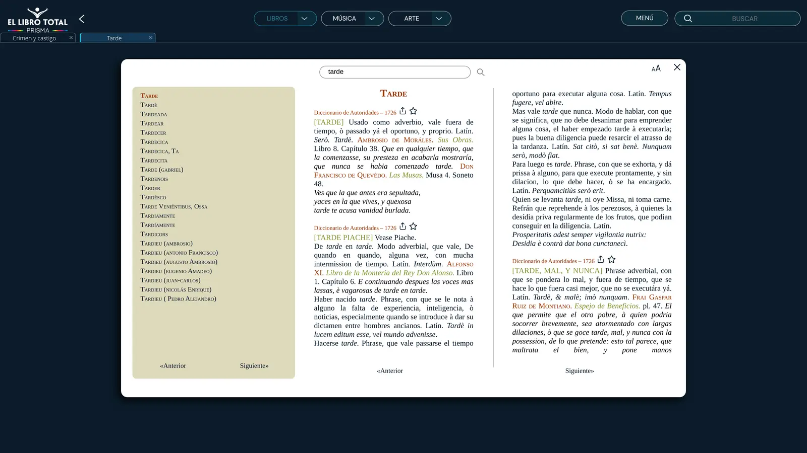
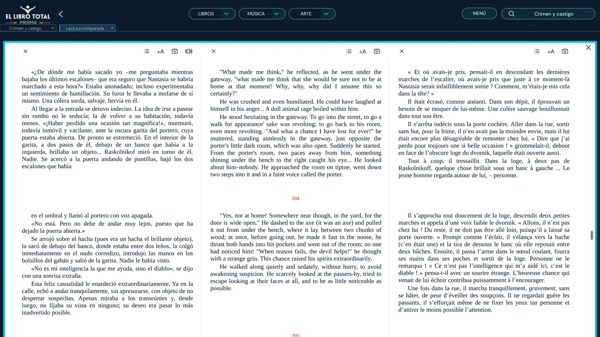
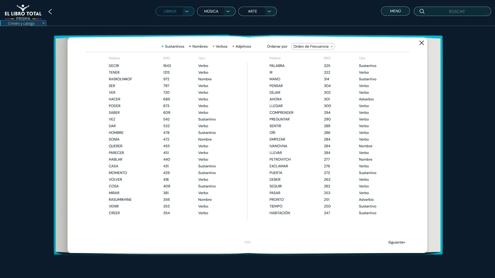
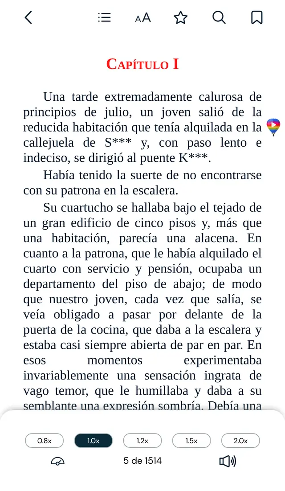
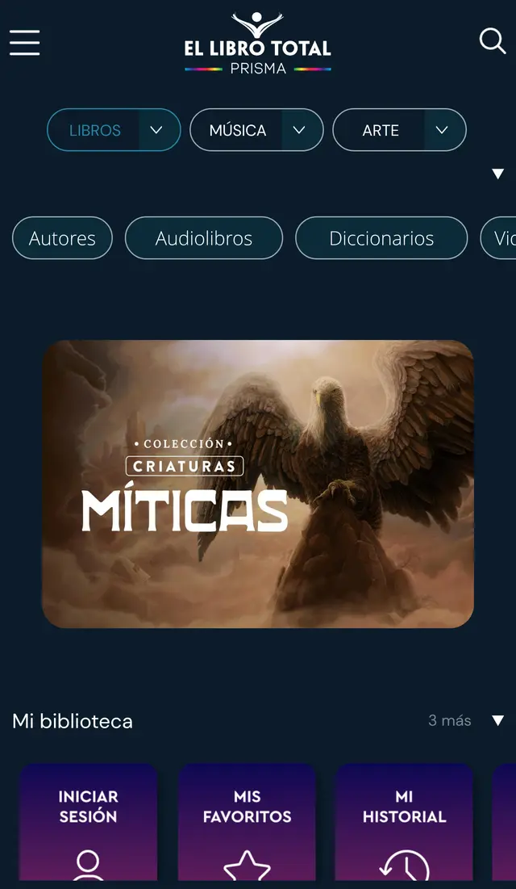

«Crimen y castigo» cuesta 18,99 € en Audible. Aquí, 0 €, narrado por una voz humana y con el texto resaltándose mientras escuchas. Lo hemos probado a fondo para encontrar la pega.
Vamos al grano: sí, es gratis de verdad. No hay letra pequeña. Hay tres límites, y conviene conocerlos antes de empezar.
Apuntamos todas las sospechas que nos vinieron a la cabeza y las comprobamos una a una. Toca cada tarjeta para ver el resultado.
«A los 7 días te pedirán la tarjeta».
No hay suscripción ni pagos. Ni siquiera hace falta crear una cuenta para escuchar.
«Estará lleno de anuncios».
Cero anuncios. Ni banners ni interrupciones: entras, eliges y escuchas.
«Seguro que es pirata».
Es legal. Solo publica obras de dominio público u obras cedidas por sus autores.
«Serán voces de robot».
Voces humanas, con nombre. Cada audiolibro indica quién lo lee.
«Algo tiene que fallar».
Tiene tres límites: no hay novedades, el audio no se descarga y el reproductor es básico.
Una fundación colombiana sin ánimo de lucro, financiada como proyecto social por la empresa de software Sistemas y Computadores. Su nombre es un guiño a Borges y a su «biblioteca total», la que contendría todos los libros.
Solo publica lo que puede publicar gratis y de forma legal: clásicos de dominio público y obras cedidas.
No es un fallo, es su modelo. Y explica todo lo demás: el catálogo, las voces y el precio.
Vale, es gratis y legal. Pero ¿qué hay dentro? Los números te van a sorprender.
audiolibros gratis, según el contador de su sección de Audiolibros (10 de octubre de 2026). Y es solo la parte con audio: la plataforma suma más de 50.000 títulos para leer.
Mueve la barra: minutos al día que puedes escuchar (en el metro, cocinando, paseando…).
Cálculo con las duraciones reales de El Libro Total. La velocidad de 1,5× y 2× solo está en el móvil.
Del misterio a los amores imposibles. Los libros con audio llevan un icono de altavoz en la portada.
Ahora lo mejor: cómo se escucha. Te lo enseñamos con clips reales.
Cuatro pasos, sin cuenta y sin instalar nada. Los clips son grabaciones reales de la web.
El buscador está arriba a la derecha. Escribe el título o el autor y pulsa Intro.
No solo aparece el libro: también música inspirada en la novela, ilustraciones y artículos. Una madriguera perfecta para curiosos.

Sinopsis, temas y, en muchos clásicos, varias traducciones. En «Crimen y castigo» hay cinco, incluido el original en ruso.
Se abre un lector con aspecto de libro. Toca el altavoz y pasa la magia:
«Crimen y castigo», capítulo I. Leído por Hernando Iván Cano (audio original de El Libro Total).
Funciona de maravilla. Pero ¿quién te lee y qué tal suena? Aquí está el primer «pero».
Analizamos 199 audiolibros al azar. Un dato salta a la vista: 1 de cada 3 los lee la misma persona.
Ojo No puedes elegir narrador: cada título tiene una sola versión en audio.
✔ De sobra para una voz. ✘ Lejos del audio de estudio de Audible.
Traducción: entre libros tendrás que tocar el volumen.
| Control | Web (ordenador) | Móvil (web y app) |
|---|---|---|
| Play / pausa | ✔ Sí | ✔ Sí |
| Paso de página automático | ✔ Sí | ✔ Sí |
| Velocidad (0,8× a 2×) | ✘ No | ✔ Sí |
| Temporizador de apagado | ✘ No | ✘ No |
| Saltar 15–30 s / barra de tiempo | ✘ No | ✘ No |
| Escuchar sin conexión | ✘ No | ✘ No |
Hasta aquí, un buen servicio gratuito. Lo que viene ahora no lo tiene ni Audible.

Selecciona una palabra y búscala sin salir del libro. Incluso en el Diccionario de Autoridades de 1726.
Ideal para estudiantes
El mismo libro en tres idiomas a la vez, párrafo a párrafo. Un atajo brutal para aprender idiomas.
Ideal para idiomas
Todas las palabras del libro, ordenadas por frecuencia: verbos, sustantivos y nombres propios.
Ideal para curiosos

Búscala como «Libro Total Libros AudioLibros» en Android o «El Libro Total» en iPhone. Gratis, y con notas altísimas.
Precio de compra del título, según SonorBooks (octubre de 2026). Puede variar: mira el precio actual en SonorBooks.
| El Libro Total | Audible | Spotify | LibriVox | |
|---|---|---|---|---|
| Precio | Gratis | 9,99 €/mes | 12 h/mes en Premium | Gratis |
| Catálogo | Clásicos y obras cedidas | Enorme, con novedades | Enorme, comercial | Dominio público |
| Voces | Humanas | Profesionales | Profesionales | Voluntarios |
| Texto y audio a la vez | ✔ | ✘ | ✘ | ✘ |
| Audio sin conexión | ✘ | ✔ | ✔ | ✔ |
| Herramientas de estudio | ✔✔ | ✘ | ✘ | ✘ |
Precios de Audible y Spotify consultados en octubre de 2026. Confírmalos en sus webs: cambian con frecuencia.
¿Y tú? Tres preguntas y sabrás si te conviene.
¿Te interesan los clásicos, estudiar o aprender idiomas?
¿Buscas sobre todo novedades y superventas?
¿Necesitas escuchar sin conexión (avión, metro sin cobertura…)?
El Libro Total no compite con Audible: quiere que los clásicos estén al alcance de cualquiera. Si buscas novedades, no es tu sitio. Si quieres escuchar a Dostoievski, a Galdós o a Quiroga gratis, y leerlos a la vez, es difícil encontrar algo mejor.
En SonorBooks comparas narraciones, precios y condiciones de todas las plataformas. Gratis y sin registro.
Sí. Es 100 % gratuito, sin anuncios y sin suscripción. Lo mantiene una fundación sin ánimo de lucro.
No. Puedes leer y escuchar sin cuenta. El registro, también gratis, añade historial, favoritos, marcadores y notas.
6.698 según el contador de su sección de Audiolibros (10 de octubre de 2026). Casi todos en español; la mayoría son cuentos, pero también hay novelas completas de muchas horas.
No de forma oficial. La app permite leer sin conexión (EPUB y PDF), pero para escuchar el audio necesitas internet.
Humanas. Cada audiolibro acredita a su narrador («Leído por…»), y el desarrollador asegura que son voces naturales, no un lector automático.
Sí. Publica obras de dominio público y obras con autorización de sus autores o traductores.
Sí en el móvil (web y app), de 0,8× a 2×. En la web de ordenador, no.
Sí. La web y las apps funcionan en España y en toda Latinoamérica.
Probamos El Libro Total el 10 de octubre de 2026 en la web de ordenador y en la web móvil, sin cuenta. Analizamos sus fichas de Google Play y App Store, sus preguntas frecuentes y una muestra aleatoria de 200 audiolibros (narradores y duraciones).
SonorBooks no tiene relación comercial con El Libro Total. Esta reseña es independiente. Las capturas y el fragmento de audio se usan con fines de reseña y crítica.